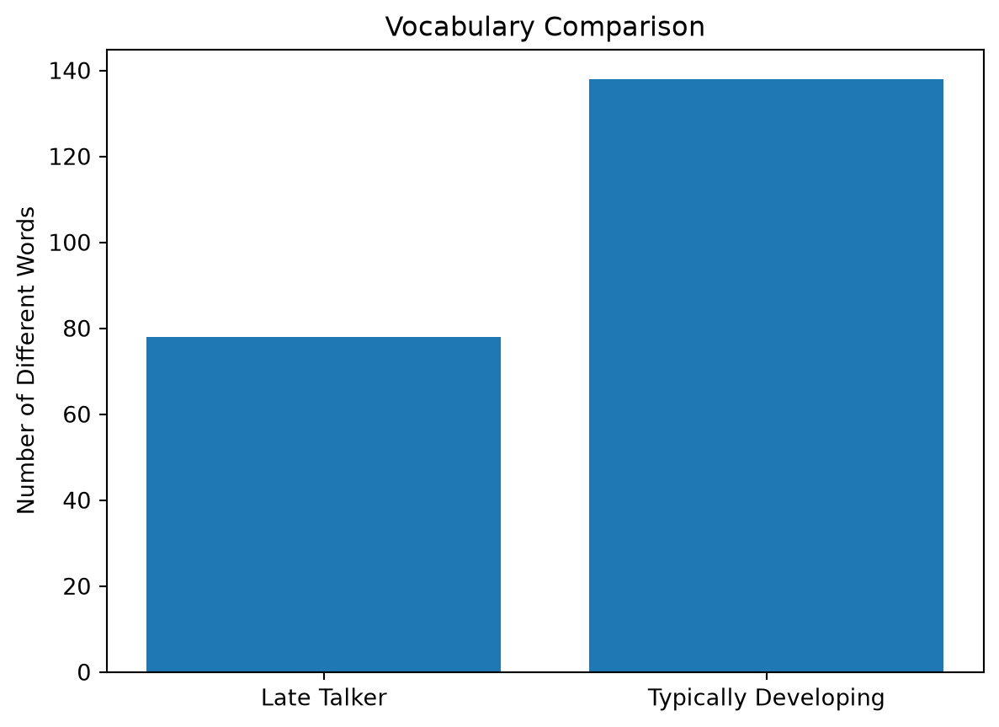
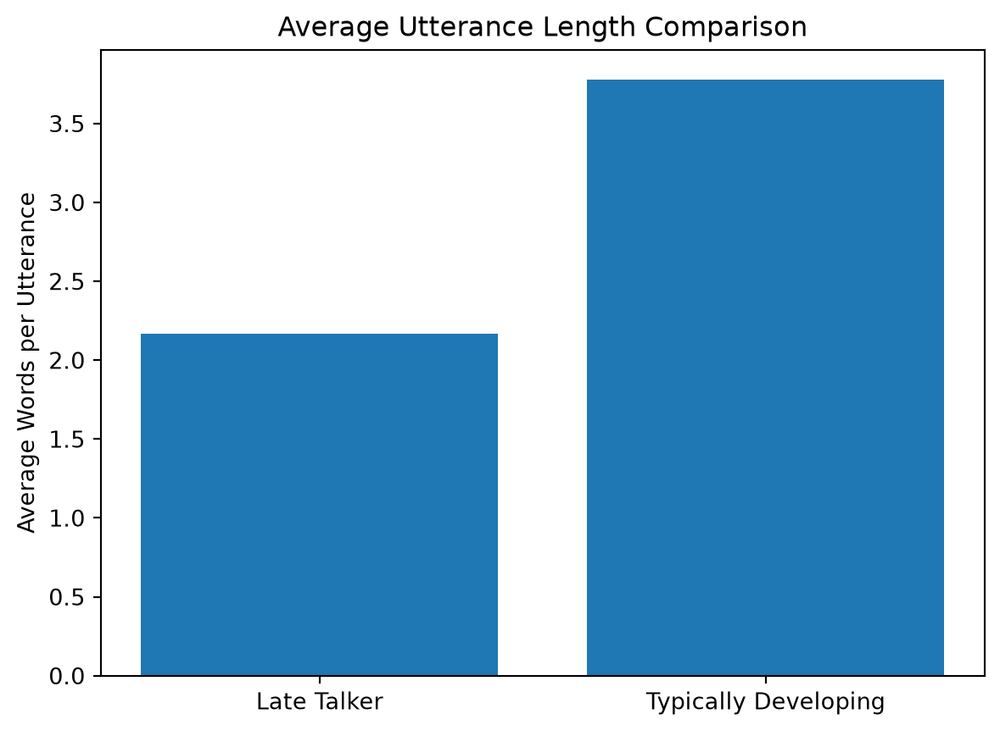

Language Differences Between Late Talkers and Typically Developing Children
1. Analysis Plan
For this project, I am comparing the language of two 30 month old children. One is a late talker and the other is typically developing. I want to answer 2 questions: Does the typically developing child use a greater variety of words than the late talker? and Does the typically developing child produce longer utterances than the late talker? I expect the typicall developing child will use more different words and longer utterances than the late talker. I will use python to count the different words each child uses and calculate the average number of words per utterance.
2. Data Check
import pandas as pdimport matplotlib.pyplot as pltfrom collections import Counter from pathlib import Path files =list(Path.home().rglob("project2_mcneece_charlie*.csv"))print(files)df = pd.read_csv(files[0])print(df.head())print(len(df))print(df.tail())
[WindowsPath('C:/Users/charl/OneDrive/Documents/git_repos/computation_4_linguistics/LIN301/course_project/project_2_component/project2_mcneece_charlie copy.csv'), WindowsPath('C:/Users/charl/OneDrive/Documents/git_repos/computation_4_linguistics/LIN301/course_project/project_2_component/project2_mcneece_charlie.csv')]
child speaker utterances
0 late_talker_child *CHI this
1 late_talker_child *INV that's a baby
2 late_talker_child *INV the daddy
3 late_talker_child *CHI yeah daddy
4 late_talker_child *INV yeah
600
child speaker utterances
595 typical_develop_child *CHI does this turn on
596 typical_develop_child *INV mhm
597 typical_develop_child *INV but you hafta sing
598 typical_develop_child *INV do you know any songs
599 typical_develop_child *INV oh come in
I loaded my CSV file from component 2 using python. The file has 600 rows, and I checked the first and last five rows to make sure the data loaded correctly. The data includes the child’s group, speaker, and utterances. The file looks ready for my analysis.
for child, group in child_df.groupby("child"): words =" ".join(group["utterances"]).lower().split() unique_words =set(words)print(child, len(unique_words))
late_talker_child 78
typical_develop_child 138
For my analysis, I counted how many diffeent words each child used by grouping their utterances and counting the unique words. The typically developing child used 138 different words and the late talker used 78.
I calculated the average number of words each child used per utterance. The typically developing child averaged 3.78 words per utterance and the late talker averaged 2.17. This shows the typically developing child used longer utterances.
4. Visualization
import matplotlib.pyplot as pltchildren = ["Late Talker", "Typically Developing"]different_words = [78, 138]plt.bar(children, different_words)plt.ylabel("Number of Different Words")plt.title("Vocabulary Comparison")plt.show()

children = ["Late Talker", "Typically Developing"]average_words = [2.17, 3.78]plt.bar(children, average_words)plt.ylabel("Average Words per Utterance")plt.title("Average Utterance Length Comparison")plt.show()

5. Interpretation
The typically developing child used more different words than the late talker, with 138 compared to 78. The typically developing child also used longer utterances, averaging 3.78 compared to 2.17. These results matched what I expected because I thought the typically developing child would use more words and longer utterances. One limitation is that I only compared two children, so the results might not be same for other children. For my final project, I could add one more child to see if the results are similar.